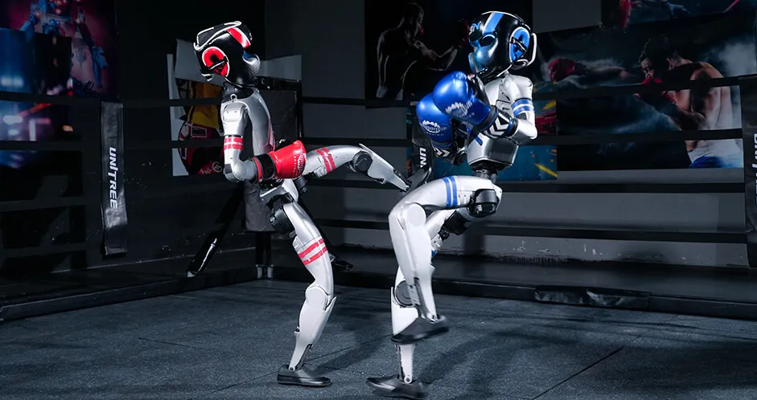

Robot Fighters : la Chine frappe fort avec sa première compétition de boxe humanoïde
Publié le 25 mai 2025
Les robots humanoïdes G1 d'Unitree démontre leur techniques. Source: Unitree
Le 19 avril dernier, la Chine avait créé l'événement en organisant le tout premier semi-marathon de robots humanoïdes. Ce 25 mai 2025, à Hangzhou, c’est dans une nouvelle discipline sportive que la robotique chinoise a réitéré sa démonstration de savoir-faire technologique.
Des spectateurs stupéfaits ont vu deux silhouettes humanoïdes s’élancer l’une vers l’autre au centre d’un ring éclairé. Ce n’est pas le récit d’une affiche de boxe au Madison Square Garden, mais bien celui du premier tournoi mondial de boxe entre robots humanoïdes, organisé par le mastodonte médiatique China Media Group (CMG).
Dans les coins, pas de Tyson Fury ou d’Oleksandr Usyk, mais des machines de 1,32 mètre, 35 kilos de métal et d’électronique, concentrés d’intelligence artificielle. Ces robots G1, conçus par Unitree Robotics, étaient contrôlés en temps réel par des humains grâce à des capteurs de mouvement et des commandes vocales. Résultat : des uppercuts, des coups de pied latéraux et même des esquives bluffantes de réalisme.
Un tournoi à l’ambition nationale
Le tournoi, baptisé Mecha Fighting Series, s’est déroulé en plusieurs phases éliminatoires. Les robots devaient non seulement démontrer leur capacité à se battre, mais aussi à réagir, à se relever après une chute, et à suivre une stratégie définie par leur opérateur. Le robot « AI Strategist », piloté par l’ingénieur Lu Xin, a dominé la compétition et remporté le titre de « Fighting Star » après un combat acharné contre « Energy Guardian ».
Au-delà du spectacle, l’événement portait un double enjeu stratégique : positionner la Chine comme leader mondial de la robotique humanoïde et éveiller des vocations au sein de la jeunesse chinoise. CMG, organisateur de la compétition, n’a pas caché ses ambitions. Le groupe public souhaite faire de ces tournois un rendez-vous récurrent et un tremplin pour les jeunes talents en robotique.
« Nous voulons inspirer une nouvelle génération d’innovateurs et faire de la Chine le centre mondial de la robotique intelligente », a déclaré un porte-parole du CMG.
Unitree Robotics, le bras armé de la Chine robotique
Au cœur du spectacle : Unitree Robotics, une startup de Hangzhou fondée en 2016 par le chercheur Wang Xingxing. Connue pour ses robots quadrupèdes à bas coût, l’entreprise a récemment misé sur l’humanoïde avec le lancement du G1, un robot agile, capable de gestes complexes, d’interactions vocales et d’apprentissage autonome.
L'entreprise a également gagné en notoriété grâce à ses performances médiatiques, notamment lors du gala du Nouvel An chinois, où ses robots G1 ont dansé aux côtés d'humains. Cette fois, ils ont prouvé qu’ils pouvaient aussi briller dans l’arène. Selon Unitree, les applications futures de ce type de robot pourraient s’étendre bien au-delà du ring : logistique, aide à la personne, sécurité, voire construction.
Vers une ligue de robots combattants ?
Si cette première édition a été expérimentale, la suite est déjà dans les tuyaux : une nouvelle compétition à plus grande échelle est annoncée pour décembre à Shenzhen, l’autre grand pôle technologique du pays. L’objectif ? Démontrer la faisabilité de robots humanoïdes polyvalents, capables de rivaliser en rapidité, précision et autonomie.
Et si le futur du sport passait par le silicium et l’acier ?
Une nouvelle ère sportive ?
En Chine comme ailleurs, les compétitions sportives de robots ont clairement le vent en poupe. Qu’il s’agisse des prestigieuses ligues comme le FIRST Robotics World Championship, la BattleBots League, des semi-marathons pour robots quadrupèdes ou bipèdes, et désormais même des combats de boxe robotique, ces événements attirent un public toujours plus large, fasciné par la performance technologique autant que par le défi physique.
Et si l’athlète de demain était fait de code et d'acier ?